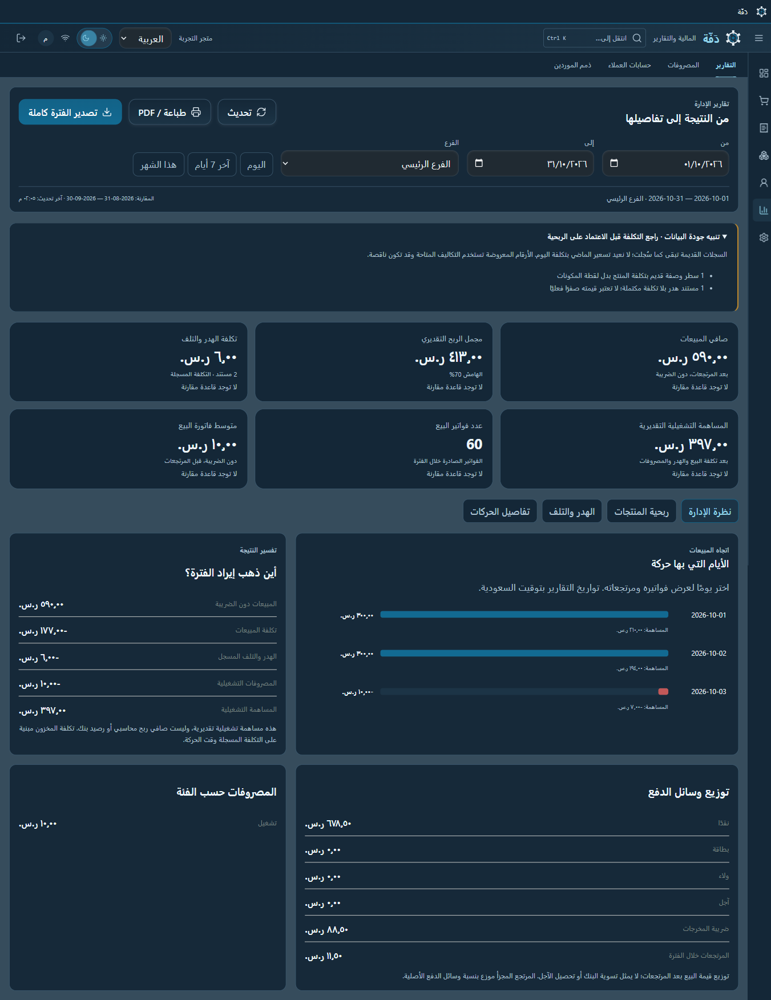

تجهيز الأجهزة
تحديد الأجهزة والمواصفات المناسبة لاستخدام المنشأة وميزانيتها، والتنسيق مع الموردين لتوريدها وتركيبها.
نظم المعلومات · الشبكات · تجهيز التقنية
نظم المعلومات ودعم أنظمة البيع والأجهزة
أجهّز برامج نقاط البيع والكمبيوترات والطابعات والماسحات للمنشآت، من اختيار الأجهزة وتوفيرها إلى التركيب والتهيئة. وأستخدم إكسل المتقدم لتنظيم البيانات وإعداد التقارير.
فهم طبيعة عمل المنشأة وما تحتاجه من أجهزة وأنظمة واتصال، لتحديد التجهيز المناسب.
رسم توضيحي · اختر جزءًا أو شغّل مراحل التجهيز
01 / التخصص
خبرتي تجمع بين أساس أكاديمي في نظم المعلومات، ومعرفة بالشبكات، وعمل ميداني في تجهيز الأجهزة والأنظمة.
تحديد الأجهزة والمواصفات المناسبة لاستخدام المنشأة وميزانيتها، والتنسيق مع الموردين لتوريدها وتركيبها.
معرفة بأساسيات الشبكات ضمن شهادة CCNA: العنونة وتقسيم الشبكات والتوجيه والتحويل وخدمات DHCP وDNS.
تهيئة الأجهزة والأنظمة للاستخدام، وضبط إعداداتها بما يتوافق مع التجهيز التقني وطبيعة العمل داخل المنشأة.
02 / مهارات مساندة
Excel المتقدم وتحليل البيانات يدعمان عملي في نظم المعلومات وتجهيز أدوات تخدم احتياج المنشأة.
تنظيف البيانات وتنظيمها، وتجميعها باستخدام Power Query والجداول المحورية، مع استخدام XLOOKUP وSUMIFS والتحقق من صحة البيانات.
تجهيز بيانات العمل وفحص جودتها، واستخراج مؤشرات تساعد على فهم المبيعات والتكلفة وحالة المستندات، وعرضها بصورة واضحة.
03 / مشاريع أعمل عليها
مشروعان يوضحان اهتمامي ببناء أنظمة عملية، وتحسين تجربة المستخدم وتنظيم بيانات العمل.

لقطة فعلية · بيانات اختبارنظام مبيعات وتشغيل منشآت
مشروع يجمع المبيعات والمخزون والمشتريات والوصفات والتقارير الإدارية في تطبيق Windows، مع تطوير مسارات التشغيل وتجربة الاستخدام.
 عرض التطبيق · رسائل تجريبية
عرض التطبيق · رسائل تجريبيةالبحث في مرفقات البريد وتنظيمها
أداة استخدمتها للعثور على مرفقات ضمن 5 سنوات من بريد Gmail، مع مراجعة المجلدات قبل الحفظ المحلي وتصدير فهرس CSV وJSON.
04 / الخبرة المستقلة
منذ 2023، أعمل بصورة مستقلة على تجهيز تقنية المنشآت، وأتابع تنفيذ الاحتياج من اختيار المعدات إلى إعداد بيئة العمل.
05 / المؤهلات
التعليم
جامعة الملك عبدالعزيز
التخرج: أبريل 2022 · المعدل: 4.09
العربية: اللغة الأم · الإنجليزية: مستوى عملي
الشهادات
شهادة سيسكو المعتمدة في الشبكات · أغسطس 2026
وزارة الموارد البشرية والتنمية الاجتماعية
06 / تواصل
يمكنك التواصل معي لمناقشة الفرص في نظم المعلومات والشبكات، أو احتياج منشأتك من الأجهزة والأنظمة.
مشروع شخصي / نظم تشغيل المنشآت
أطور وأراجع مشروع دفّة بمساعدة أدوات الذكاء الاصطناعي، لجمع وظائف تشغيل النشاط في مسارات واضحة.
تسجيل المبيعات وحده لا يوضح حركة المخزون أو أثر الوصفات والهدر على تكلفة التشغيل.
تطوير ومراجعة مسارات المبيعات والمخزون والشراء والوصفات، وتحسين التقارير والواجهات وفق احتياج الاستخدام.
مشروع شخصي / تنظيم مستندات البريد
أنشأت الأداة لتسهيل العثور على المستندات بين مرفقات Gmail، ومراجعتها في قائمة واحدة قبل حفظ الملفات المطلوبة.
بحث بالمرسل والتاريخ والكلمات ونوع الملف، ثم مراجعة المجلدات المقترحة وحفظ المرفقات المحددة محليًا، مع فهرس CSV وJSON.
التصنيف اقتراح يمكن تعديله؛ الملفات غير الواضحة تبقى بحاجة إلى مراجعة بدل اعتماد تصنيفها بصمت.